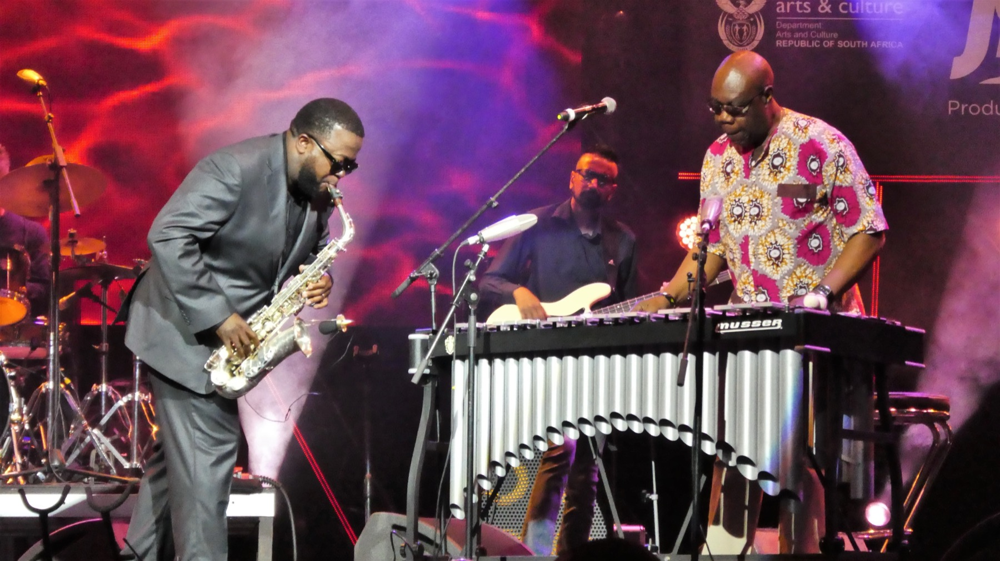

Castle Lager Jazz Festival
Malombo’s visibility within jazz festivals placed ritual-derived sound into national and translocal performance circuits.
From Ritual to Festival
The question is not whether Malombo becomes modern, but how ritual logics persist as performance moves into clubs, festivals, and amplified circulation.

Malombo’s visibility within jazz festivals placed ritual-derived sound into national and translocal performance circuits.
Amplification, ensemble variation, and public staging changed the setting, but not necessarily the deeper logic of repetition, invocation, and collective intensification.
Later South African experimental and jazz groups register the afterlife of Malombo as a spiritual and structural influence rather than a fixed genre marker.
Argument
Tabane’s work suggests recontextualization rather than severance. Urban performance does not erase ritual architecture; it redistributes it across new audiences, technologies, and publics [7].
Continuity
What persists is form as action: cyclicality, call, intensity, embodied response, and a refusal to reduce sound to entertainment alone. In that sense, the festival stage becomes another charged site of invocation.